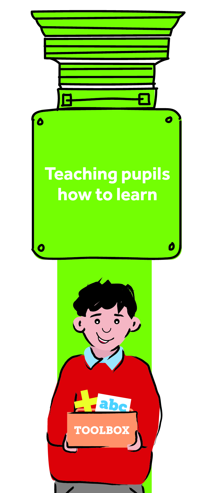
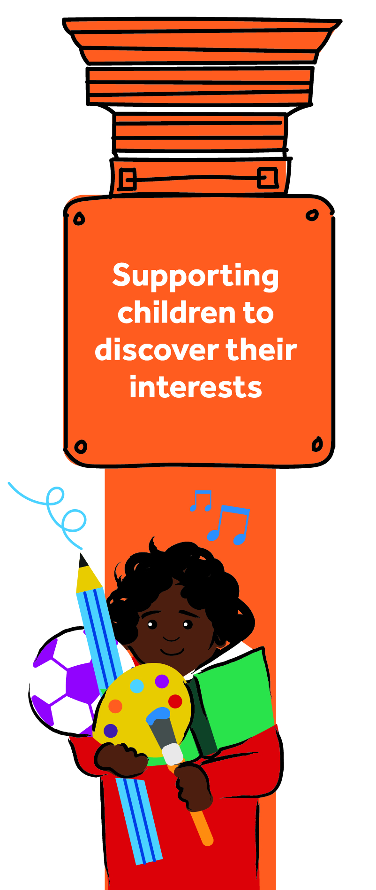
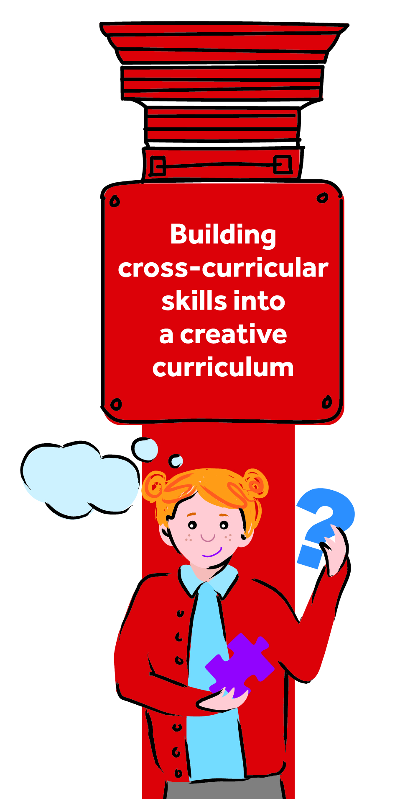
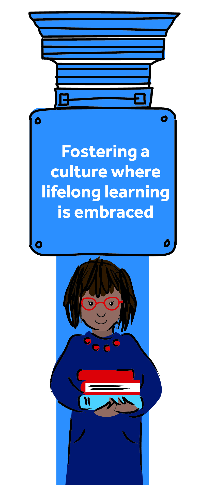
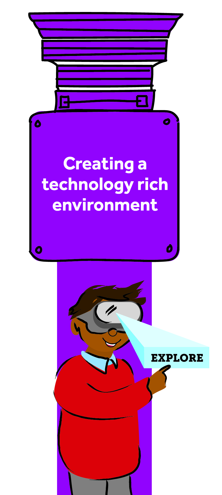

Big Question
Curiosity and purpose.
Built with purpose.
Designed for every child.
A values-led curriculum that develops knowledge, character and confidence through meaningful questions, memorable experiences and authentic learning presentations.
Discover how we designed it ↓We began not with a scheme, but with a question: what do our children need to know, experience and become in order to thrive?
Each pillar shapes the knowledge we select, the experiences we create and the way children learn across their seven-year journey.

Children are explicitly taught the habits, strategies and behaviours that help them become increasingly confident and independent learners.

Children encounter a rich range of subjects, people, places and possibilities so they can recognise their talents and imagine ambitious futures.

Subjects retain their integrity while children learn to connect, apply and communicate knowledge in purposeful and creative ways.

Curiosity, effort and reflection are celebrated so children understand that learning continues far beyond a lesson, a classroom or their time at KCA.

Technology is used thoughtfully to expand access, deepen understanding, support creativity and prepare children to participate confidently in a changing world.
Our pillars do not sit separately. They shape every layer of the curriculum.
Our fundamental skills are deliberately revisited and strengthened from Reception to Year 6. The official skill names and progression statements will be added next.
Learning is structured around a compelling big question and culminates in a presentation to an authentic audience.
Curiosity and purpose.
Carefully sequenced learning.
Learning brought to life.
Understanding shared with others.
“How can one person change the world?”
Whole-school experiences sit within the curriculum story, not beside it.
The structure is ready for the current curriculum maps, subject documents and final big questions.